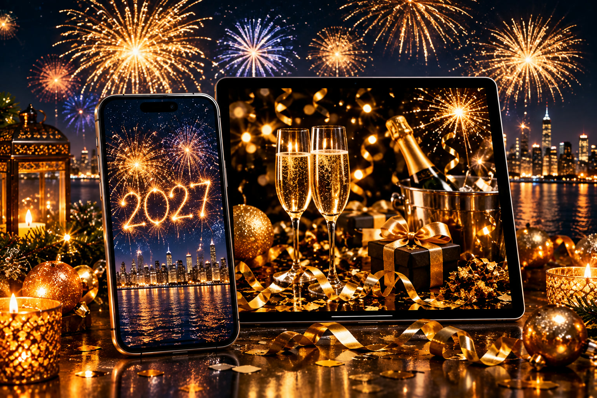

Happy New Year 2027 Wallpapers: HD Backgrounds
Published October 12, 2026 · Updated October 12, 2026 · By EventBuzz Team

When the clock strikes midnight on December 31st, millions of people change their wallpapers along with the calendar. A New Year wallpaper is the digital equivalent of fresh decorations: fireworks frozen mid-burst, a city skyline glittering at midnight, or a clean, minimal "2027" that makes the whole phone feel new. But a wallpaper that looks stunning in a thumbnail can look terrible behind your icons — too bright for the clock, too busy for the app grid, or too small and blurry on a modern screen. This guide to Happy New Year 2027 wallpapers covers the styles worth choosing, the exact sizes for phones and desktops, and step-by-step set-up instructions for iPhone, Android, Windows, and Mac.
What Makes a Great New Year Wallpaper
A wallpaper is not a poster — it lives underneath your clock, widgets, and icons, and it has to cooperate with them. Judge every candidate against four checks:
- Dark zones for the clock: the best New Year wallpapers keep the top-center or upper third dark — night sky, dark water, deep gradient — so the lock-screen time stays readable. A firework bursting exactly where the clock sits is the most common wallpaper mistake.
- One focal point, not ten: a single firework burst, one skyline, one champagne tower. Collages of ten celebration photos look festive as a greeting card and chaotic as a background.
- Glow without glare: golds, ambers, and warm whites read as celebratory; pure white backgrounds and neon overloads strain the eyes, especially on OLED screens at night.
- Real resolution: a wallpaper must be at least as large as your screen. Anything smaller gets upscaled and turns soft — the number one cause of "why does my wallpaper look blurry."
Best New Year 2027 Wallpaper Styles
New Year wallpaper styles fall into clear families. Pick your family before you start scrolling:
- Fireworks at midnight: the timeless choice. Look for bursts photographed against a truly dark sky with reflection on water below — the reflection doubles the glow and gives the composition depth. Best as a phone lock screen with the burst in the lower half.
- City skylines at midnight: New York, Dubai, Sydney, London — skylines dressed in lights with fireworks overhead. These are superb desktop wallpapers because the horizon line sits naturally behind the taskbar and the sky stays calm for icons.
- Minimal "2027" numerals: a clean gold or silver 2027 on black, dark blue, or deep gradient. The fastest-growing style: elegant, readable behind any icon layout, and genuinely flattering on OLED screens since black pixels stay off.
- Champagne and confetti: macro shots of champagne bubbles, gold confetti mid-fall, sparklers writing in the dark. Warm, textural, and forgiving of cropping — great when you need to fit an odd screen ratio.
- Midnight clock and countdown: dramatic close-ups of clock faces approaching twelve, hourglasses, roman numerals in gold. Thematic and sophisticated; the circular clock face naturally frames a centered phone clock.
- Winter celebration scenes: snowy streets with string lights, cozy celebration tables, fireworks over mountains. A good bridge if your Christmas wallpaper is still up and you want continuity into January.
A pairing that works beautifully: a bold fireworks image on the lock screen and a minimal dark "2027" on the home screen. The phone feels celebratory every time you pick it up, and your apps stay readable.
Phone Wallpaper Picks: Lock Screen vs Home Screen
The lock screen shows the time large near the top, so choose images with their brightest detail in the lower half — fireworks rising from the bottom edge, a skyline sitting low with dark sky above, the 2027 numerals centered slightly below middle. The home screen carries your app grid, so go darker and simpler: a deep midnight gradient with subtle gold texture, a minimal 2027 numeral, or a dark skyline corner.
For resolution, 2026-era phones mostly run at 1080×2400 or higher, with flagships reaching 1440×3120. Download portrait files of at least 1080×1920, ideally 1440×3120 or larger — that covers virtually every phone. Never set a landscape photo as a phone wallpaper; the crop will cut the best parts. If you love a wide skyline panorama, it belongs on your desktop, or crop to the single most glowing section for the phone.
Desktop and Laptop Wallpaper Picks
Desktops want horizontal composition: skylines stretching across the frame, fireworks with dark sky at the edges for icon space, or a wide countdown scene with the focal glow off-center. Target 1920×1080 (Full HD) for most laptops, 2560×1440 (QHD) for larger monitors, and 3840×2160 (4K) for big displays. A 1080p image stretched onto a 4K monitor is the classic "fuzzy wallpaper" complaint — match or exceed your panel.
Dual-monitor setups get a bonus: panoramic midnight skylines and continuous firework reflections stretch beautifully across two screens. Set your taskbar position first, then judge the crop, and keep the brightest burst slightly off-center so overlapping windows do not cover it.
How to Set a New Year Wallpaper on Your Phone
On iPhone: save the image to Photos, then open Settings > Wallpaper > Add New Wallpaper > Photos. Pick the image, pinch to position the glow below the clock, and use the live preview to check that the time sits on a dark patch. Assign to lock screen, home screen, or both. If the image has a strong subject, try the Depth Effect — it layers the clock behind the subject for a striking look, though it works best with clean, simple compositions.
On Android: long-press the home screen > Wallpaper & style, choose the saved image, adjust the crop box, and apply to lock screen, home screen, or both. Many Android phones offer a blur or dim option for the home screen wallpaper — a slight dim makes even a busy fireworks photo sit quietly behind icons. After setting, lock and unlock once: if the clock overlaps a firework burst, re-crop so the burst sits lower.
How to Set It on a Windows PC or Mac
On Windows: right-click the desktop > Personalize > Background, browse to the saved image, and set the fit to Fill. Never use Stretch — it warps skylines and turns circular fireworks into ovals. Windows also supports a slideshow: point it at a folder of New Year wallpapers and rotate the celebration every few minutes through the holiday week.
On Mac: open System Settings > Wallpaper, add the photo, and choose Fill Screen. macOS handles high-DPI displays well provided the source is 1920×1080 or larger on standard screens, 2560×1600 or larger on Retina MacBooks. A festive touch for the season: a calm midnight-skyline desktop paired with a bold fireworks phone lock screen makes your devices feel like a matched New Year set.
Wallpaper Quality Tips: Avoid the Blurry Look
- Download the largest file: thumbnails are for choosing; the full-size file is for setting. Always open the full image before saving, especially from search results and free wallpaper sites.
- Crop, do not stretch: wrong aspect ratio? Crop to the glowing section or use Fill. Stretching visibly distorts fireworks and numerals.
- Check for watermarks: free collections sometimes stamp logos across the center. Inspect the full image before committing.
- Mind the date on the design: only download wallpapers that actually say 2027 — last year’s "2026" designs still circulate widely in search results and look instantly dated on January 1st.
- Set it on December 30th or 31st: changing the wallpaper just before New Year Eve makes the night feel like an event; leaving it up through the first week of January keeps the fresh-year feeling going.
- Keep a yearly folder: save favorites in a "Wallpapers 2027" folder. Next December you will have a starting gallery instead of a fresh search.
Your wallpaper is the first thing you see every morning. Start 2027 with a screen that glows — bold on the lock screen, calm on the home screen.
Frequently Asked Questions
What size should a New Year phone wallpaper be?
At least 1080×1920 pixels in portrait orientation; 1440×3120 or larger is ideal for modern phones. The file should match or exceed your screen resolution to stay crisp.
What is the difference between New Year images and New Year wallpapers?
New Year images are pictures you share with friends and family, like greetings and photos. Wallpapers are background images sized and composed to sit on your phone or computer screen behind your icons and clock.
How do I set a New Year wallpaper on iPhone?
Save the image to Photos, then go to Settings > Wallpaper > Add New Wallpaper > Photos, position it in the preview so the clock sits on a dark area, and assign it to the lock screen, home screen, or both.
How do I set a New Year wallpaper on Android?
Long-press the home screen, choose Wallpaper & style, select the saved image, adjust the crop, and apply it to the lock screen, home screen, or both. Use the dim or blur option if the image is busy behind icons.
Why does my wallpaper look blurry?
The usual cause is a source image smaller than your screen. Re-download the largest version available, use Fill instead of Stretch, and make sure the design actually says 2027 — older low-resolution designs circulate widely.
When is New Year Eve 2026?
New Year Eve 2026 is Thursday, December 31, 2026, welcoming Friday, January 1, 2027. Set your wallpaper on the 30th or 31st so the fresh look lands with the celebration.
Conclusion
A New Year wallpaper takes three minutes and you see it a hundred times a day — it is worth choosing deliberately. Pick a style with a dark, calm area for your clock, match the file to your screen size, and double-check that the numerals say 2027. Bold fireworks on the lock screen, minimal calm on the home screen, a skyline on the desktop: your devices welcome the new year right along with you.
More from EventBuzz:
Happy New Year 2027!
New Year Party Picks
Party supplies and decorations to ring in 2027 in style.


Prices shown at the time of publishing and can change. Links take you to AliExpress, where shipping and delivery details are shown.